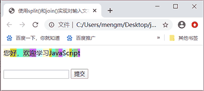
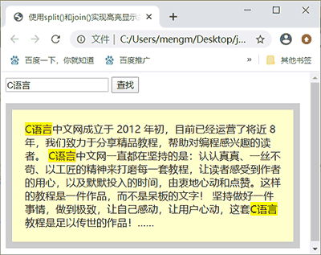
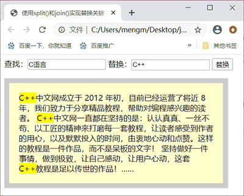
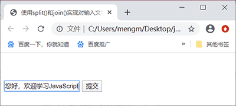
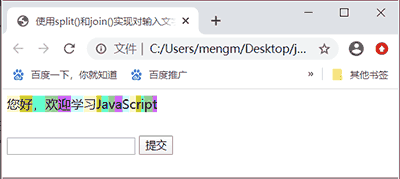
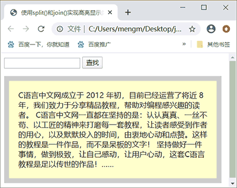
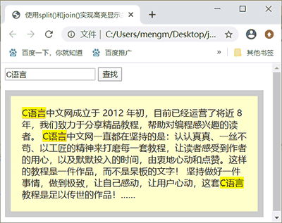
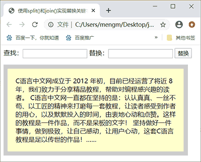
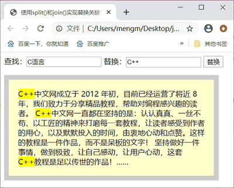

首页 > 编程笔记
JS split()分割字符串
JavaScript split() 方法用于将字符串分隔为一个字符串数组，格式为：
split() 方法根据“分隔符”参数将字符串分隔成不大于“length”参数指定长度的字符串数组。参数“分隔符”既可以是某个字符串，也可以是一个正则表达式。参数“length”可选，该参数可指定返回的数组的最大长度。如果设置了 length 参数，返回的字符串个数不会多于这个参数；如果没有设置该参数，整个字符串都会被分割，不考虑其长度。
split() 方法在分隔符指定的边界处将字符串 str 进行分隔，返回的数组中的字符串不包括分隔符自身。需要注意的是，如果分隔符为空字符串
split() 示例如下：
下面举两个 split() 方法的实用案例。
【例 1】使用 split() 实现对输入文字设置背景颜色。

图 2：单击提交按钮后为文本添加背景
【例 2】使用 split() 和 join() 实现高亮显示关键字。
为了在连接这些数组元素后的字符串中包含“C语言”，需要使用“C语言”作为连接符，同时为了高亮显示作为关键字的“C语言”，还需要对连接符设置背景颜色，因而需要设置背景样式的相关内容作为连接符的组成部分。在示例 2 中使用了 span 元素来设置连接符的背景颜色。
上述代码在 Chrome 浏览器中的运行结果如图 3 和图 4 所示。

图 4：输入关键字后查找将高亮显示关键字
从图 4 可看到，在段落中会找到所有关键字且全部对其高亮显示。
【例 3】使用 split() 和 join() 实现替换关键字。

图 6：输入查找和替换内容后的替换结果
str.split( 分隔符 [,length] )
该方法和数组的 join() 互为逆运算。split() 方法根据“分隔符”参数将字符串分隔成不大于“length”参数指定长度的字符串数组。参数“分隔符”既可以是某个字符串，也可以是一个正则表达式。参数“length”可选，该参数可指定返回的数组的最大长度。如果设置了 length 参数，返回的字符串个数不会多于这个参数；如果没有设置该参数，整个字符串都会被分割，不考虑其长度。
split() 方法在分隔符指定的边界处将字符串 str 进行分隔，返回的数组中的字符串不包括分隔符自身。需要注意的是，如果分隔符为空字符串
''，则 str 字符串中的每个字符之间都会被分割。split() 示例如下：
var str = "Hello,can I help you?";
alert(str.split(","));//使用，作为分隔符，输出：["Hello","can I help you?"]
alert(str.split(' '));//使用空格字符串作为分隔符，输出：["Hello,can", "I", "help", "you?"]
alert(str.split(''));//使用空字符串作为分隔符，输出：["H","e","l","l","o",",","c","a","n","
//","I"," ","h","e","l","p"," ","y","o","u","?"]
alert(str.split('can'));//使用"can"字符串作为分隔符，输出：["Hello,", " I help you?"]
下面举两个 split() 方法的实用案例。
【例 1】使用 split() 实现对输入文字设置背景颜色。
<!doctype html>
<html>
<head>
<meta charset = "utf-8">
<title>使用split()和join()实现对输入文字设置背景颜色</title>
<script>
window.onload = function(){
var oDiv = document.getElementById('div1');
var aInp = document.getElementsByTagName('input');
var arrColor = ['#FFC','#CC3','#6FC','#9C9','#C6F','#CFF'];
aInp[1].onclick = function(){
var str = aInp[0].value;
var arr = str.split('');//将字符串使用空字符串分隔为字符串数组
for(var i = 0; i < arr.length; i++){
arr[i] = '<span style="background:'+arrColor[i%arrColor.length]+';">'+
arr[i]+'</span>';
}
oDiv.innerHTML = arr.join('');//将数组各个元素使用空字符串连接成字符串
aInp[0].value = '';//清空文本框中输入的文本内容
};
};
</script>
<body>
<div id="div1" style="width:300px;height:50px;"></div>
<input type="text"/>
<input type="button" value="提交"/>
</body>
</html>
上述 JS 代码使用 split('') 按空字符将字符串分隔到的一个个字符作为数组元素存放在数组 arr 中，然后使用循环语句对数组中的每个字符元素添加背景颜色后，通过 join('') 使用空字符将数组中的各个字符元素连接成一个字符串。上述代码在 Chrome 浏览器中的运行结果如图 1 和图 2 所示。

图 1：在文本框中输入文本内容
图 1：在文本框中输入文本内容

图 2：单击提交按钮后为文本添加背景
【例 2】使用 split() 和 join() 实现高亮显示关键字。
<!doctype html>
<html>
<head>
<meta charset="utf-8">
<title>使用split()和join()实现高亮显示关键字</title>
<style>
p{border:10px solid #ccc;background:#ffc;width:400px;padding:20px;font-size:16px;
font-family:微软雅黑;}
span{background:yellow;}
</style>
<script>
window.onload = function(){
var aInp = document.getElementsByTagName('input');
var oP = document.getElementsByTagName('p')[0];
aInp[1].onclick = function(){
var str = aInp[0].value;
if(!str)return;//如果没有输入查找关键字，则返回，否则高亮显示关键字
//高亮显示关键字
oP.innerHTML = oP.innerHTML.split(str).join('<span>'+str+'</span>');
};
};
</script>
<body>
<input type="text"/>
<input type="button" value="查找"/>
<p>C语言中文网成立于 2012 年初，目前已经运营了将近 8 年，我们致力于分享精品教程，帮助对编程感兴趣的读者。
C语言中文网一直都在坚持的是：认认真真、一丝不苟、以工匠的精神来打磨每一套教程，让读者感受到作者的用心，以及默默投入的时间，由衷地心动和点赞。这样的教程是一件作品，而不是呆板的文字！
坚持做好一件事情，做到极致，让自己感动，让用户心动，这套C语言教程是足以传世的作品！……</p>
</body>
</html>
上述 JS 代码使用了 oP.innerHTML 获取需要操作的文本，然后对这些文本使用 split() 方法通过文本框中输入的查找关键字作为分隔符进行分隔。当段落中包含文本框中输入的关键字时，段落将会被分隔成包含至少两个以上元素的数组。例如，假设输入的关键字是“C语言”，由于段落中存在 3 处“C语言”，因而段落被分隔为一个具有 4 个元素的数组，这些数组元素中都不包含“C语言”。为了在连接这些数组元素后的字符串中包含“C语言”，需要使用“C语言”作为连接符，同时为了高亮显示作为关键字的“C语言”，还需要对连接符设置背景颜色，因而需要设置背景样式的相关内容作为连接符的组成部分。在示例 2 中使用了 span 元素来设置连接符的背景颜色。
上述代码在 Chrome 浏览器中的运行结果如图 3 和图 4 所示。

图 3：最初运行效果
图 3：最初运行效果

图 4：输入关键字后查找将高亮显示关键字
从图 4 可看到，在段落中会找到所有关键字且全部对其高亮显示。
【例 3】使用 split() 和 join() 实现替换关键字。
<!doctype html>
<html>
<head>
<meta charset="utf-8">
<title>使用split()和join()实现替换关键字</title>
<style>
p{border:10px solid #ccc;background:#ffc;width:400px;padding:20px;font-size:16px;
font-family:微软雅黑;}
span{background:yellow;}
</style>
<script>
window.onload = function(){
var aInp = document.getElementsByTagName('input');
var oP = document.getElementsByTagName('p')[0];
aInp[2].onclick = function(){
var oldStr = aInp[0].value;
var newStr = aInp[1].value;
if(!oldStr)return;//如果没有输入查找关键字，则返回，否则高亮显示关键字
//高亮显示关键字
oP.innerHTML = oP.innerHTML.split(oldStr).join('<span>'+newStr+'</span>');
};
};
</script>
<body>
查找：<input type="text"/>
替换：<input type="text"/>
<input type="button" value="替换"/>
<p>C语言中文网成立于 2012 年初，目前已经运营了将近 8 年，我们致力于分享精品教程，帮助对编程感兴趣的读者。 C语言中文网一直都在坚持的是：认认真真、一丝不苟、以工匠的精神来打磨每一套教程，让读者感受到作者的用心，以及默默投入的时间，由衷地心动和点赞。这样的教程是一件作品，而不是呆板的文字！ 坚持做好一件事情，做到极致，让自己感动，让用户心动，这套C语言教程是足以传世的作品！……</p>
</body>
</html>
例 3 和例 2 很类似，主要不同的地方是使用 join() 进行数组元素连接时使用的连接符是第 2 个文本框中内容。上述代码在 Chrome 浏览器中的运行结果如图 5 和图 6 所示。

图 5：最初运行效果
图 5：最初运行效果

图 6：输入查找和替换内容后的替换结果
关注公众号「站长严长生」，在手机上阅读所有教程，随时随地都能学习。内含一款搜索神器，免费下载全网书籍和视频。

微信扫码关注公众号